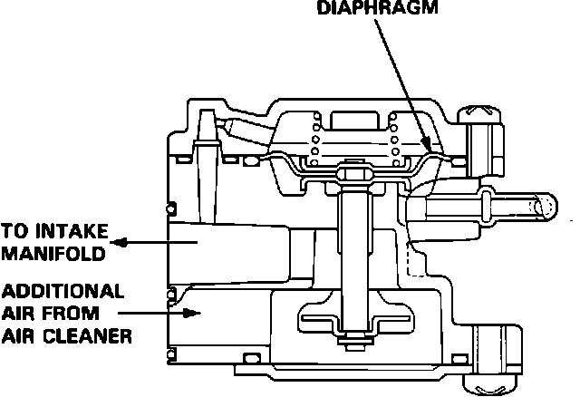

Starting Air Valve: Testing and Inspection
Air Boost Valve:

1. Start engine and warm up to operating temperature.
2. Remove the EACV connector.
3. Remove the vacuum control hose from the air boost valve diaphragm. Engine idle speed should increase.
4. Re-install the vacuum control hose. Engine idle speed should decrease.
5. If no engine idle change is noted, check for vacuum at the vacuum control hose. If no vacuum is present, check for splitting or restriction. Repair vacuum source problem and recheck.
6. If no engine idle change is noted and vacuum supply is OK, replace the air boost valve.